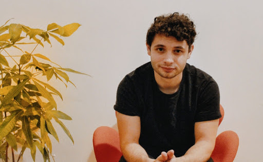

|  |
Jordan T. Ash ash.jordan -at- microsoft.com 

|
I'm a senior researcher at Microsoft Research in New York City, where I mostly think about problems related to deep learning and sequential decision making. I earned my PhD from the computer science department at Princeton University and was advised by Ryan P. Adams.
Selected Papers
Understanding contrastive learning requires incorporating inductive biases
Nikunj Saunshi, Jordan T. Ash, Surbhi Goel, Dipendra Misra, Cyril Zhang, Sanjeev Arora, Sham Kakade, and Akshay Krishnamurthy. 2022.
paper
Anti-concentrated confidence bonuses for scalable exploration
Jordan T. Ash, Cyril Zhang, Surbhi Goel, Akshay Krishnamurthy, and Sham Kakade. ICLR 2022.
paper /
code
Investigating the role of negatives in contrastive representation learning
Jordan T. Ash, Surbhi Goel, Akshay Krishnamurthy, and Dipendra Misra. AISTATS 2022.
paper
Gone fishing: neural active learning with Fisher embeddings
Jordan T. Ash, Surbhi Goel, Akshay Krishnamurthy, and Sham Kakade. NeurIPS 2021.
paper
Joint analysis of gene expression levels and histological images identifies genes associated with tissue morphology
Jordan T. Ash, Gregory Darnell, Daniel Munro, and Barbara E. Engelhardt. Nature Communications 2021.
paper /
code
Learning composable energy surrogates for PDE order reduction
Alex Beatson, Jordan T. Ash, Geoffrey Roeder, Tianju Xie, and Ryan P. Adams. NeurIPS 2020 (Talk).
paper /
code
On warm-starting neural network training
Jordan T. Ash and Ryan P. Adams. NeurIPS 2020.
paper
A data-driven computational scheme for the nonlinear mechanical properties of cellular mechanical metamaterials under large deformation
Tianju Xue, Alex Beatson, Maurizio Chiaramonte, Geoffrey Roeder, Jordan T. Ash, Yigit Menguc, Sigrid Adriaenssens, Ryan P. Adams, and Sheng Mao. Soft Matter 2020.
paper
Deep batch active learning by diverse, uncertain gradient lower bounds
Jordan T. Ash, Chicheng Zhang, Akshay Krishnamurthy, John Langford, and Alekh Agarwal. ICLR 2020 (Talk).
paper /
code
End-to-end training of deep probabilistic CCA for joint modeling of paired biomedical observations
Gregory Gundersen, Bianca Dumitrascu, Jordan T. Ash, and Barbara E. Engelhardt. UAI 2019.
paper /
code
Learning deep resnet blocks sequentially using boosting theory
Furong Huang, Jordan T. Ash, John Langford, and Rob Schapire. ICML 2018.
paper /
code
Unsupervised domain adaptation using approximate label matching
Jordan T. Ash, Rob Schapire, and Barbara E. Engelhardt. ICML workshop on implicit generative models 2017.
paper
Automated particle picking for low-contrast macromolecules in cryo-electron microscopy
Robert Langlois, Jesper Pallesen, Jordan T. Ash, Danny Nam Ho, John L. Rubinstein, and Joachim Frank. Journal of structural biology 2014.
paper /
code
Fully automated particle selection and verification in single-particle cryo-EM
Robert Langlois, Jordan T. Ash, Jesper Pallesen, and Joachim Frank. Computational Methods for Three-Dimensional Microscopy Reconstruction, Springer 2014.
book chapter